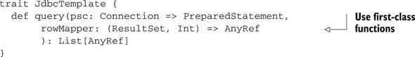
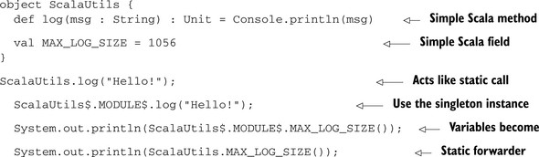

{% include JB/setup %}
{% raw %}
<div>

<div class="calibre5"></div><h2 class="chapter" id="ch01">Chapter 1. <a id="ch01__title" class="calibre6"></a>Scala—a blended language
      </h2>
      <p class="calibre2"> </p><table cellspacing="5" width="100%" border="1" class="calibre10"><colgroup class="calibre19"><col width="550" class="calibre12"/></colgroup><tbody class="calibre13"><tr class="calibre14"><td class="calibre20"/>
            </tr></tbody></table><div class="calibre4">
         
         <b id="ch01sb01" class="calibre21">In this chapter</b>
         
         <p class="calibre22"></p>
         <ul class="calibre23"><li class="calibre24">Short introduction to Scala</li>
            
            <li class="calibre24">Insights into Scala’s design</li>
            
         </ul></div>
      <table cellspacing="5" width="100%" border="1" class="calibre10"><colgroup class="calibre19"><col width="550" class="calibre12"/></colgroup><tbody class="calibre13"><tr class="calibre14"><td class="calibre20"/>
            </tr></tbody></table><p class="calibre2"> </p><p class="noind">Scala was born from the mind of Martin Odersky, a man who had helped introduce generics into the Java programming language.
         Scala was an offshoot from the Funnel language, an attempt to combine functional programming and Petri nets. Scala was developed
         with the premise that you could mix together object orientation, functional programming, and a powerful type system and still
         keep elegant, succinct code. It was hoped that this blending of concepts would create something that real developers could
         use and that could be studied for new programming idioms. It was such a large success that industry has started adopting Scala
         as a viable and competitive language.
      </p>
      
      <p class="noind">Understanding Scala requires understanding this mixture of concepts. Scala attempts to blend three dichotomies of thought
         into one language. These are:
      </p>
      
      <p class="calibre22"></p>
      <ul class="calibre23"><li class="calibre24">Functional programming and object-oriented programming</li>
         
         <li class="calibre24">Expressive syntax and static typing</li>
         
         <li class="calibre24">Advanced language features and rich Java integration</li>
         
      </ul><p class="noind"><a id="iddle1399" class="calibre25"></a><a id="iddle1714" class="calibre25"></a><a id="iddle1926" class="calibre25"></a>Functional programming is programming through the definition and composition of functions. Object-oriented programming is
         programming through the definition and composition of objects. In Scala, functions <i class="calibre9">are</i> objects. Programs can be constructed through both the definition and composition of objects or functions. This gives Scala
         the ability to focus on “nouns” or “verbs” in a program, depending on what is the most prominent.
      </p>
      
      <p class="noind">Scala also blends expressive syntax with static typing. Mainstream statically typed languages tend to suffer from verbose
         type annotations and boilerplate syntax. Scala takes a few lessons from the ML programming language and offers static typing
         with a nice expressive syntax. Code written in Scala can look as expressive as dynamically typed languages, like Ruby, while
         retaining type safety.
      </p>
      
      <p class="noind">Finally, Scala offers a lot of advanced language features that are not available in Java. But Scala runs on the Java virtual
         machine (JVM) and has tight integration with the Java language. This means that developers can make direct use of existing
         Java libraries and integrate Scala into their Java applications while also gaining the additional power of Scala. This integration
         makes Scala a practical choice for any JVM-based project.
      </p>
      
      <p class="noind">Let’s take a deeper look at the blending of paradigms in Scala.</p>
      
      
      <h3 id="ch01lev1sec1" class="calibre17"><a id="ch01lev1sec1__title" class="calibre6"></a>1.1. Functional programming meets object orientation
      </h3>
      
      <p class="noind">Functional programming and object-oriented programming are two different ways of looking at a problem. Functional programming
         puts special emphasis on the “verbs” of a program and ways to combine and manipulate them. Object-oriented programming puts
         special emphasis on “nouns” and attaches verbs to them. The two approaches are almost inverses of each other, with one being
         “top down” and the other “bottom up.”
      </p>
      
      <p class="noind">Object-oriented programming is a top-down approach to code design. It approaches software by dividing code into nouns or objects.
         Each object has some form of identity (self/this), behavior (methods), and state (members). After identifying nouns and defining
         their behaviors, interactions between nouns are defined. The problem with implementing interactions is that the interactions
         need to live inside an object. Modern object-oriented designs tend to have <i class="calibre9">service classes</i>, which are a collection of methods that operate across several domain objects. Service classes, although objects, usually
         don’t have a notion of state or behavior independent of the objects on which they operate.
      </p>
      
      <p class="noind">A good example is a program that implements the following story: “A cat catches a bird and eats it.” An object-oriented programmer
         would look at this sentence and see two nouns: cat and bird. The cat has two verbs associated with it: catch and eat. The
         following program is a more object-oriented approach:
      </p>
      
      <pre id="PLd0e520" class="calibre8">class Bird
class Cat {
   def catch(b: Bird): Unit = ...
   def eat(): Unit = ...

}

val cat = new Cat
val bird = new Bird

cat.catch(bird)
cat.eat()</pre>
      
      <p class="noind">In the example, when a <kbd class="calibre18">Cat</kbd> catches a <kbd class="calibre18">Bird</kbd>, it converts the bird to a type of <kbd class="calibre18">Food</kbd>, which it can then <kbd class="calibre18">eat</kbd>. The code focuses on the nouns and their actions: <kbd class="calibre18">Cat.eat()</kbd>, <kbd class="calibre18">Cat.catch(...)</kbd>. In functional programming, the focus is on the verbs.
      </p>
      
      <p class="noind">Functional programming approaches software as the combination and application of functions. It tends to decompose software
         into behaviors, or actions that need to be performed, usually in a bottom-up fashion. Functions are viewed in a mathematical
         sense, purely operations on their input. All variables are considered immutable. This immutability aids concurrent programming.
         Functional programming attempts to defer all side effects in a program as long as possible. Removing side effects makes reasoning
         through a program simpler, in a formal sense. It also provides much more power in how things can be abstracted and combined.
      </p>
      
      <p class="noind">In the story “A cat catches a bird and eats it,” a functional program would see the two verbs <i class="calibre9">catch</i> and <i class="calibre9">eat</i>. A program would create these two functions and compose them to create the program. The following program is a more functional
         approach:
      </p>
      
      <pre id="PLd0e561" class="calibre8">trait Cat
trait Bird
trait Catch
trait FullTummy

def catch(hunter: Cat, prey: Bird): Cat with Catch
def eat(consumer: Cat with Catch): Cat with FullTummy

val story = (catch _) andThen (eat _)
story(new Cat, new Bird)</pre>
      
      <p class="noind">In the example, the <kbd class="calibre18">catch</kbd> method takes a <kbd class="calibre18">Cat</kbd> and a <kbd class="calibre18">Bird</kbd> and returns a new value of type <kbd class="calibre18">Cat with Catch</kbd>. The eat method is defined as taking a <kbd class="calibre18">CatWithPrey</kbd> (a cat needs something to eat) and returns a <kbd class="calibre18">FullCat</kbd> (because it’s no longer hungry). Functional programming makes more use of the type system to describe what a function is
         doing. The <kbd class="calibre18">catch</kbd> and <kbd class="calibre18">eat</kbd> methods use the type signatures to define the expected input and output states of the function. The <kbd class="calibre18">with</kbd> keyword is used to combine a type with another. In this example, the traits Catch and FullTummy are used to denote the <kbd class="calibre18">current state</kbd> of a Cat. The methods <kbd class="calibre18">eat</kbd> and <kbd class="calibre18">catch</kbd> return new instances of Cat attached to different state types. The <kbd class="calibre18">story</kbd> value is created by composing the functions <kbd class="calibre18">catch</kbd> and <kbd class="calibre18">eat</kbd>. This means that the <kbd class="calibre18">catch</kbd> method is called and the result is fed into the <kbd class="calibre18">eat</kbd> method. Finally, the <kbd class="calibre18">story</kbd> function is called with a <kbd class="calibre18">Cat</kbd> and a <kbd class="calibre18">Bird</kbd> and the result is the output of the story: a full cat.
      </p>
      
      <p class="noind">Functional programming and object orientation offer unique views of software. It’s these differences that make them useful
         to each other. Object orientation can deal with composing the nouns and functional programming can deal with composing <a id="iddle1283" class="calibre25"></a><a id="iddle1289" class="calibre25"></a><a id="iddle1290" class="calibre25"></a><a id="iddle1392" class="calibre25"></a><a id="iddle1393" class="calibre25"></a><a id="iddle1600" class="calibre25"></a><a id="iddle1927" class="calibre25"></a>verbs. In the example, the functional version was built by composing a set of functions that encompassed a story and then
         feeding the initial data into these functions. For the object-oriented version, a set of objects was created and their internal
         state was manipulated. Both approaches are useful in designing software. Object orientation can focus on the nouns of the
         system and functional programming can compose the verbs.
      </p>
      
      <h5 class="notetitle" id="ch01table01">Table 1.1. <a id="ch01table01__title" class="calibre25"></a>Attributes commonly ascribed to object-oriented and functional programming
      </h5>
      <table cellspacing="5" frame="hsides" rules="cols" cellpadding="8" width="100%" class="calibre26"><colgroup span="2" class="calibre11"><col width="250" class="calibre12"/><col width="250" class="calibre12"/></colgroup><thead class="calibre27"><tr class="calibre14"><th class="docTableCell1" scope="col" valign="top">
                  <p class="noind">Object-oriented programming</p>
               </th>
               <th class="docTableCell1" scope="col" valign="top">
                  <p class="noind">Functional programming</p>
               </th>
            </tr></thead><tbody class="calibre13"><tr class="calibre14"><td class="docTableCell" valign="top">Composition of objects (nouns)</td>
               <td class="docTableCell" valign="top">Composition of functions (verbs)</td>
            </tr><tr class="calibre14"><td class="docTableCell" valign="top">Encapsulated stateful interaction</td>
               <td class="docTableCell" valign="top">Deferred side effects</td>
            </tr><tr class="calibre14"><td class="docTableCell" valign="top">Iterative algorithms</td>
               <td class="docTableCell" valign="top">Recursive algorithms and continuations</td>
            </tr><tr class="calibre14"><td class="docTableCell" valign="top">Imperative flow</td>
               <td class="docTableCell" valign="top">Lazy evaluation</td>
            </tr><tr class="calibre14"><td class="docTableCell" valign="top">N/A</td>
               <td class="docTableCell" valign="top">Pattern matching</td>
            </tr></tbody></table><p class="noind">In fact, in recent years, many Java developers have started moving toward splitting nouns and verbs. The Enterprise JavaBeans
         (EJB) specification splits software into <i class="calibre9">Session beans</i>, which tend to contain behaviors, and <i class="calibre9">Entity beans</i>, which tend to model the nouns in the system. Stateless Session beans start looking more like collections of functional code
         (although missing most of the useful features of functional code).
      </p>
      
      <p class="noind">This push of functional style has come along much further than the EJB specifications. The Spring Application Framework promotes
         a functional style with its Template classes, and the Google Collections library is very functional in design. Let’s look
         at these common Java libraries and see how Scala’s blend of functional programming with object orientation can enhance these
         Application Program Interfaces (APIs).
      </p>
      
      
      <h4 id="ch01lev2sec1" class="calibre28">1.1.1. <a id="ch01lev2sec1__title" class="calibre25"></a>Discovering existing functional concepts
      </h4>
      
      <p class="noind">Many modern API designs have been incorporating functional ideas without ascribing them to functional programming. For Java,
         things such as Google Collections or the Spring Application Framework make popular functional concepts accessible to the Java
         developer. Scala takes this further and embeds them into the language. To illustrate, you’ll do a simple translation of the
         methods on the popular Spring <kbd class="calibre18">Jdbc-Template</kbd> class and see what it starts to look like in Scala.
      </p>
      
      <p class="center1"></p>
      
      <p class="noind">Now for a simple translation into Scala, you’ll convert the interface into a trait having the same method(s):</p>
      
      <pre id="PLd0e798" class="calibre8">trait JdbcTemplate {
  def query(psc: PreparedStatementCreator,
            rowMapper: RowMapper): List[_]
}</pre>
      
      <p class="noind"><a id="iddle1079" class="calibre25"></a><a id="iddle1240" class="calibre25"></a><a id="iddle1601" class="calibre25"></a><a id="iddle1634" class="calibre25"></a><a id="iddle1783" class="calibre25"></a><a id="iddle1835" class="calibre25"></a><a id="iddle1840" class="calibre25"></a>The simple translation makes a lot of sense but it’s still designed with a distinct Java flair. Let’s start digging deeper
         into this design. Specifically, let’s look at the <kbd class="calibre18">PreparedStatementCreator</kbd> and the <kbd class="calibre18">RowMapper</kbd> interfaces.
      </p>
      
      <pre id="PLd0e849" class="calibre8">public interface PreparedStatementCreator {
  PreparedStatement createPreparedStatement(Connection con)
     throws SQLException;
}</pre>
      
      <p class="noind">The <kbd class="calibre18">PreparedStatementCreator</kbd> interface contains only one method: <kbd class="calibre18">create-PreparedStatement</kbd>. This method takes a JDBC connection and returns a <kbd class="calibre18">PreparedStatement</kbd>. The <kbd class="calibre18">RowMapper</kbd> interface looks similar:
      </p>
      
      <pre id="PLd0e870" class="calibre8">public interface RowMapper {
  Object mapRow(ResultSet rs, int rowNum)
        throws SQLException;
}</pre>
      
      <p class="noind">Scala provides first-class functions. This feature lets us change the <kbd class="calibre18">JdbcTemplate</kbd> query method so that it takes functions instead of interfaces. These functions should have the same signature as the sole
         method defined on the interface. In this case, the <kbd class="calibre18">PreparedStatementCreator</kbd> argument can be replaced by a function that takes a connection and returns a <kbd class="calibre18">PreparedStatement</kbd>. The <kbd class="calibre18">RowMapper</kbd> argument can be replaced by a function that takes a <kbd class="calibre18">ResultSet</kbd> and an integer and returns some type of object. The updated Scala version of the <kbd class="calibre18">JdbcTemplate</kbd> interface would look as follows:
      </p>
      
      <p class="center1"></p>
      
      <p class="noind">The query method is now more functional. It’s using a technique known as the <i class="calibre9">loaner pattern</i>. This technique involves some controlling entity (the <kbd class="calibre18">JdbcTemplate</kbd>) creating a resource and delegating the use of it to another function. In this case, there are two functions and three resources.
         Also, as the name implies, <kbd class="calibre18">JdbcTemplate</kbd> is part of a template method in which pieces of the behavior were deferred for the user to implement. In pure object-orientation,
         this is usually done via inheritance. In a more functional approach, these behavioral pieces become arguments to the controlling
         function. This provides more flexibility by allowing mixing/matching arguments without having to continually use subclasses.
      </p>
      
      <p class="noind">You may be wondering why you’re using <kbd class="calibre18">AnyRef</kbd> for the second argument’s return value. <kbd class="calibre18">AnyRef</kbd> is equivalent in Scala to java.lang.Object. Because Scala has supported generics, even when compiling for 1.4 JVMs, we should
         modify this interface further to remove the <kbd class="calibre18">AnyRef</kbd> and allow users to return specific types.
      </p>
      
      <p class="center1"></p>
      
      <p class="noind"><a id="iddle1093" class="calibre25"></a><a id="iddle1329" class="calibre25"></a><a id="iddle1335" class="calibre25"></a><a id="iddle1384" class="calibre25"></a><a id="iddle1394" class="calibre25"></a><a id="iddle1430" class="calibre25"></a><a id="iddle1781" class="calibre25"></a><a id="iddle1782" class="calibre25"></a>With a few simple transformations, you’ve created an interface that works directly against functions. This is a more functional
         approach because Scala’s function traits allow composition. By the time you’re finished reading this book, you’ll be able
         to approach the design of this interface completely differently.
      </p>
      
      <p class="noind">Functional programming also shines when used in a collections library. The Ruby and Python programming languages support some
         functional aspects directly in their standard library collections. For Java users, the Google Collections library bring practices
         from functional programming.
      </p>
      
      
      
      <h4 id="ch01lev2sec2" class="calibre28">1.1.2. <a id="ch01lev2sec2__title" class="calibre25"></a>Examining functional concepts in Google Collections
      </h4>
      
      <p class="noind">The Google Collections API adds a lot of power to the standard Java collections. Primarily it brings a nice set of efficient
         immutable data structures, and some functional ways of interacting with your collections, primarily the <kbd class="calibre18">Function</kbd> interface and the <kbd class="calibre18">Predicate</kbd> interface. These interfaces are used primarily from the <kbd class="calibre18">Iterables</kbd> and <kbd class="calibre18">Iterators</kbd> classes. Let’s look at the <kbd class="calibre18">Predicate</kbd> interface and its uses.
      </p>
      
      <pre id="PLd0e1008" class="calibre8">interface Predicate&lt;T&gt; {
   public boolean apply(T input);
   public boolean equals(Object other);
}</pre>
      
      <p class="noind">The <kbd class="calibre18">Predicate</kbd> interface is simple. Besides equality, it contains an <kbd class="calibre18">apply</kbd> method that returns true or false against its argument. This is used in an <kbd class="calibre18">Iterators</kbd>/<kbd class="calibre18">Iterables-filter</kbd> method. The <kbd class="calibre18">filter</kbd> method takes a collection and a predicate. It returns a new collection containing only elements that pass the predicate <kbd class="calibre18">apply</kbd> method. Predicates are also used in the <kbd class="calibre18">find</kbd> method. The <kbd class="calibre18">find</kbd> method looks in a collection for the first element passing a Predicate and returns it. The filter and find method signatures
         are shown in the following code.
      </p>
      
      <p class="center1"></p>
      
      <p class="noind">There also exists a <kbd class="calibre18">Predicates</kbd> class that contains static methods for combining predicates (ANDs/ORs) and standard predicates for use, such as “not null.”
         This simple interface creates some powerful functionality through the potential combinations that can be achieved with terse
         code. Also, because the predicate itself is passed into the filter function, the function can determine the best way or time
         to execute the filter. The data structure may be amenable to lazily evaluating the predicate, making the iterable returned
         a “view” of the original collection. It might also determine that it could best optimize the creation of the new iterable
         through some form of parallelism. This has been abstracted away, so the library could improve over time with no code changes
         on our part.
      </p>
      
      <p class="noind"><a id="iddle1077" class="calibre25"></a><a id="iddle1338" class="calibre25"></a><a id="iddle1388" class="calibre25"></a><a id="iddle1552" class="calibre25"></a><a id="iddle1738" class="calibre25"></a>The Predicate interface is rather interesting, because it looks like a simple function. This function takes some type T and
         returns a Boolean. In Scala this would be represented <kbd class="calibre18">T =&gt; Boolean</kbd>. Let’s rewrite the filter/find methods in Scala and see what their signatures would look like:
      </p>
      
      <p class="center1"></p>
      
      <p class="noind">You’ll immediately notice that in Scala we aren’t using any explicit <kbd class="calibre18">? super T</kbd> type annotations. This is because Scala defines type variance at declaration time. For this example, that means that the
         variance annotation is defined on the <kbd class="calibre18">Function1</kbd> class rather than requiring it on every method that used the class.
      </p>
      
      <p class="noind">What about combining predicates in Scala? We can accomplish a few of these quickly using some functional composition. Let’s
         make a new <kbd class="calibre18">Predicates</kbd> module in Scala that takes in function predicates and provides commonly used function predicates. The input type of these
         combination functions should be <kbd class="calibre18">T =&gt; Boolean</kbd> and the output should also be <kbd class="calibre18">T =&gt; Boolean</kbd>. The predefined predicates should also have a type <kbd class="calibre18">T =&gt; Boolean</kbd>.
      </p>
      
      <p class="center1"></p>
      
      <p class="noind">We’ve now started to delve into the realm of functional programming. We’re defining first-class functions and combining them
         to perform new behaviors. You’ll notice the <kbd class="calibre18">or</kbd> method take two predicates, <kbd class="calibre18">f1</kbd> and <kbd class="calibre18">f2</kbd>. It then creates a new anonymous function that takes an argument <kbd class="calibre18">t</kbd> and ORs the results of <kbd class="calibre18">f1</kbd> and <kbd class="calibre18">f2</kbd>. Playing with functions also makes more extensive use of generics and the type system. Scala has put forth a lot of effort
         to reduce the overhead for generics in daily usage.
      </p>
      
      <p class="noind">Functional programming is more than combining functions with other functions. The essence of functional programming is delaying
         side effects as long as possible. This predicate object defines a simple mechanism to combine predicates. The predicate isn’t
         used to cause side effects until passed to the <kbd class="calibre18">Iterables</kbd> object. This distinction is important. Complex predicates can be built from simple predicates using the helper methods defined
         on the object predicates.
      </p>
      
      <p class="noind">Functional programming grants the means to defer state manipulation in a program until a later time. It provides a mechanism
         to construct verbs that delay side effects. These verbs can be combined in a fashion that makes reasoning through a program
         simpler. Eventually the verbs are applied against the nouns of the system. In <a id="iddle1137" class="calibre25"></a><a id="iddle1849" class="calibre25"></a><a id="iddle1850" class="calibre25"></a><a id="iddle1954" class="calibre25"></a><a id="iddle1957" class="calibre25"></a><a id="iddle2057" class="calibre25"></a><a id="iddle2105" class="calibre25"></a>traditional FP, side effects are delayed as long as possible. In blended OO-FP, the idioms merge.
      </p>
      
      
      
      
      <h3 id="ch01lev1sec2" class="calibre17"><a id="ch01lev1sec2__title" class="calibre6"></a>1.2. Static typing and expressiveness
      </h3>
      
      <p class="noind">The Scala type system allows expressive code. A common misconception among developers is that static typing leads to verbose
         code. This myth exists because many of the languages derived from C, where types must be explicitly specified in many different
         places. As software has improved, along with compiler theory, this is no longer true. Scala uses some of these advances to
         reduce boilerplate in code and keep things concise.
      </p>
      
      <p class="noind">Scala made a few simple design decisions that help make it expressive:</p>
      
      <p class="calibre22"></p>
      <ul class="calibre23"><li class="calibre24">Changing sides of type annotation</li>
         
         <li class="calibre24">Type inference</li>
         
         <li class="calibre24">Scalable syntax</li>
         
         <li class="calibre24">User-defined implicits</li>
         
      </ul><p class="noind">Let’s look at how Scala changes the sides of type annotations.</p>
      
      
      <h4 id="ch01lev2sec3" class="calibre28">1.2.1. <a id="ch01lev2sec3__title" class="calibre25"></a>Changing sides
      </h4>
      
      <p class="noind">Scala places type annotations on the right-hand side of variables. In some statically typed languages, like Java or C++, it’s
         common to have to express the types of variables, return values, and arguments. When specifying variables or parameters, the
         convention, drawn from C, is to place type indicators on the left-hand side of the variable name. For method arguments and
         return values, this is acceptable, but causes some confusion when creating different styles of variables. C++ is the best
         example of this, as it has a rich set of variable styles, such as volatile, const, pointers, and references. <a href="#ch01table02" class="calibre7">Table 1.2</a> shows a comparison of C++ variables and Scala variables.
      </p>
      
      <h5 class="notetitle" id="ch01table02">Table 1.2. <a id="ch01table02__title" class="calibre25"></a>Variable definition in C++ versus Scala
      </h5>
      <table cellspacing="5" frame="hsides" rules="cols" cellpadding="8" width="100%" class="calibre26"><colgroup span="4" class="calibre11"><col width="150" class="calibre12"/><col width="150" class="calibre12"/><col width="125" class="calibre12"/><col width="125" class="calibre12"/></colgroup><thead class="calibre27"><tr class="calibre14"><th class="docTableCell1" scope="col" valign="top">
                  <p class="noind">Variable type</p>
               </th>
               <th class="docTableCell1" scope="col" valign="top">
                  <p class="noind">C++</p>
               </th>
               <th class="docTableCell1" scope="col" valign="top">
                  <p class="noind">Java</p>
               </th>
               <th class="docTableCell1" scope="col" valign="top">
                  <p class="noind">Scala</p>
               </th>
            </tr></thead><tbody class="calibre13"><tr class="calibre14"><td class="docTableCell" valign="top">Mutable integer variable</td>
               <td class="docTableCell" valign="top">int x</td>
               <td class="docTableCell" valign="top">int x</td>
               <td class="docTableCell" valign="top">var x: Int</td>
            </tr><tr class="calibre14"><td class="docTableCell" valign="top">Immutable integer value</td>
               <td class="docTableCell" valign="top">const int x</td>
               <td class="docTableCell" valign="top">final int x</td>
               <td class="docTableCell" valign="top">val x: Int</td>
            </tr><tr class="calibre14"><td class="docTableCell" valign="top">Constant pointer to a volatile integer</td>
               <td class="docTableCell" valign="top">volatile int * const x</td>
               <td class="docTableCell" valign="top">N/A</td>
               <td class="docTableCell" valign="top">N/A</td>
            </tr><tr class="calibre14"><td class="docTableCell" valign="top">Lazily evaluated integer value</td>
               <td class="docTableCell" valign="top">N/A</td>
               <td class="docTableCell" valign="top">N/A</td>
               <td class="docTableCell" valign="top">lazy val x: Int</td>
            </tr></tbody></table><p class="noind">The more complicated a variable type, the more annotations are required directly on the type of the variable. In C++, this
         is maximized in the usage of a pointer, because a pointer can be constant. Scala defines three variable types on the left-hand
         side, like <kbd class="calibre18">var</kbd>, <kbd class="calibre18">val</kbd>, and <kbd class="calibre18">lazy val</kbd>. These leave the type of the variable clean. In all instances, the type of the name <kbd class="calibre18">x</kbd> is <kbd class="calibre18">Int</kbd>.
      </p>
      
      <p class="noind"><a id="iddle1802" class="calibre25"></a><a id="iddle1955" class="calibre25"></a><a id="iddle1958" class="calibre25"></a><a id="iddle2066" class="calibre25"></a>In addition to separating the concerns of how a variable behaves from the variable type, the placement of types on the right
         allows type inference to determine the type of the variables.
      </p>
      
      
      
      <h4 id="ch01lev2sec4" class="calibre28">1.2.2. <a id="ch01lev2sec4__title" class="calibre25"></a>Type inference
      </h4>
      
      <p class="noind">Scala performs type inference wherever possible. Type inference is when the compiler determines what the type annotation should
         be, rather than forcing the user to specify one. The user can always provide a type annotation, but has the option to let
         the compiler do the work.
      </p>
      
      <pre id="PLd0e1421" class="calibre8">val x: Int = 5
val y = 5</pre>
      
      <p class="noind">This feature can drastically reduce the clutter found in some other typed languages. Scala takes this even further to do some
         level of inference on arguments passed into methods, specifically with first-class functions.
      </p>
      
      <pre id="PLd0e1430" class="calibre8">def myMethod(functionLiteral: A =&gt; B): Unit
myMethod({ arg: A =&gt; new B })
myMethod({ arg =&gt; new B })</pre>
      
      <p class="noind">If a method is known to take a function argument, the compiler can infer the types used in a function are literal.</p>
      
      
      
      <h4 id="ch01lev2sec5" class="calibre28">1.2.3. <a id="ch01lev2sec5__title" class="calibre25"></a>Dropping verbose syntax
      </h4>
      
      <p class="noind">Scala syntax takes the general approach that when the meaning of a line of code is straightforward, the verbose syntax can
         be dropped. This feature can confuse users first using Scala but can be rather powerful when used wisely. Let’s show a simple
         refactoring from the full glory of Scala syntax into the simplistic code that’s seen in idiomatic usage. Here is a function
         for Quicksort in Scala.
      </p>
      
      <p class="center1"></p>
      
      <p class="noind">This code accepts a list whose type, <kbd class="calibre18">T</kbd>, is able to be implicitly converted into a variable of type <kbd class="calibre18">Ordered[T]</kbd> (<kbd class="calibre18">T &lt;% Ordered[T]</kbd>). We’ll discuss type parameters and constraints in great detail in <a href="kindle_split_014.html#ch06" class="calibre7">chapter 6</a>, so don’t focus too much on these. We’re requiring that the list contain elements that we have some notion of ordering for,
         specifically a less than function (<kbd class="calibre18">&lt;</kbd>). We then examine the list. If it’s empty, or Nil, then we return a Nil list. If it encounters a list, we extract the head
         (<kbd class="calibre18">x</kbd>) and tail (<kbd class="calibre18">xs</kbd>) of the list. We use the head element of the list to partition the tail into two lists. We then recursively call the Quicksort
         method on each partition. In the same line, we combine the sorted partitions and the head element into a complete list.
      </p>
      
      <p class="noind"><a id="iddle1078" class="calibre25"></a><a id="iddle1506" class="calibre25"></a><a id="iddle1608" class="calibre25"></a><a id="iddle1726" class="calibre25"></a><a id="iddle1779" class="calibre25"></a><a id="iddle1798" class="calibre25"></a><a id="iddle1872" class="calibre25"></a><a id="iddle1956" class="calibre25"></a>You may be thinking, “Wow, Scala looks ugly.” In this case you would be right. The code is cluttered and difficult to read.
         There’s a lot of syntactic noise preventing the meaning of the code from being clear. There’s also a lot of type information
         after <kbd class="calibre18">qsort</kbd>. Let’s pull out our surgical knife and start cutting out cruft. First we’ll start with Scala’s semicolon inference. The compiler
         will assume that the end of a line is the end of an expression, unless you leave some piece of syntax hanging, like the <kbd class="calibre18">.</kbd> before a method call.
      </p>
      
      <p class="noind">But removing semicolons isn’t quite enough to reduce the clutter. We should also use an <i class="calibre9">operator notation</i>. This is the name Scala gives to its ability to treat methods as operators. A method of no arguments can be treated as a
         postfix operator. A method of one argument can be treated as an infix operator. There’s also the special rule for certain
         characters (for example, <kbd class="calibre18">:</kbd>) at the end of a method name that reverses the order of a method call. These rules are demonstrated as follows:
      </p>
      
      <pre id="PLd0e1542" class="calibre8">x.foo(); /*is the same as*/ x foo
x.foo(y); /*is the same as*/ x foo y
x.::(y); /*is the same as*/ y :: x</pre>
      
      <p class="noind">Scala also provides placeholder notation when defining anonymous functions (aka, lambdas). This syntax uses the <kbd class="calibre18">_</kbd> keyword as a placeholder for a function argument. If more than one placeholder is used, each consecutive placeholder refers
         to consecutive arguments to the function literal. This notation is usually reserved for simple functions, such as the less-than
         (&lt;) comparison in our Quicksort.
      </p>
      
      <p class="noind">We can apply this notation paired with operator notation to achieve the following on our quick sort algorithm:</p>
      
      <p class="center1"></p>
      
      <p class="noind">Scala offers syntactic shortcuts for simple cases, and it provides a mechanism to bend the type system via implicits conversions
         and implicits arguments.
      </p>
      
      
      
      <h4 id="ch01lev2sec6" class="calibre28">1.2.4. <a id="ch01lev2sec6__title" class="calibre25"></a>Implicits are an old concept
      </h4>
      
      <p class="noind">Scala implicits are a new take on an old concept. The first time I was ever introduced to the concept of implicit conversions
         was with primitive types in C++. C++ allows primitive types to be automatically converted as long as there is no loss of precision.
         For example, we can use an int literal when declaring a long value. The types <i class="calibre9">double</i>, <i class="calibre9">float</i>, <i class="calibre9">int</i>, and <i class="calibre9">long</i> are different to the compiler. It does try to be intelligent and “do the right thing” when mixing these values. Scala provides
         this same mechanism, but using a language feature that’s available for anyone.
      </p>
      
      <p class="noind">The <kbd class="calibre18">scala.Predef</kbd> object is automatically imported into scope by Scala. This places its members available to all programs. It’s a handy mechanism
         for providing convenience functions to users, like directly writing <kbd class="calibre18">println</kbd> instead of <kbd class="calibre18">Console <a id="iddle1134" class="calibre25"></a><a id="iddle1786" class="calibre25"></a>.println</kbd> or <kbd class="calibre18">System.out.println</kbd>. Predef also provides what it calls <i class="calibre9">primitive widenings</i>. These are a set of implicit conversions that automatically migrate from lower-precision types to higher precision types.
         The following listing shows the set of methods defined for the <kbd class="calibre18">Byte</kbd> type.
      </p>
      
      
      
      <h5 class="notetitle" id="ch01list1">Listing 1.1. <a id="ch01list1__title" class="calibre25"></a>Byte conversions in scala.Predef object
      </h5>
      <pre id="PLd0e1622" class="calibre8">implicit def byte2short(x: Byte): Short = x.toShort
  implicit def byte2int(x: Byte): Int = x.toInt
  implicit def byte2long(x: Byte): Long = x.toLong
  implicit def byte2float(x: Byte): Float = x.toFloat
  implicit def byte2double(x: Byte): Double = x.toDouble</pre>
      
      <p class="noind">These methods are calls to the runtime-conversion methods. The implicit before the method means the compiler may attempt to
         apply this method to a type <kbd class="calibre18">Byte</kbd>, if it’s required for correct compilation. This means if we attempt to pass a <kbd class="calibre18">Byte</kbd> to a method requiring a <kbd class="calibre18">Short</kbd>, it will use the implicit conversion defined as <kbd class="calibre18">byte2short</kbd>. Scala also takes this one step further and looks for methods via implicit conversions if the current type doesn’t have the
         called method. This comes in handy for more than just primitive conversions.
      </p>
      
      <p class="noind">Scala also uses the implicit conversion mechanism as a means of extending Java’s base classes (<kbd class="calibre18">Integer</kbd>, <kbd class="calibre18">String</kbd>, <kbd class="calibre18">Double</kbd>, and so on). This allows Scala to make direct use of Java classes, for ease of integration, and provide richer methods that
         make use of Scala’s more advanced features. Implicits are a powerful feature and are mistrusted by some. The key to implicits
         in Scala are knowing how and when to use them.
      </p>
      
      
      
      <h4 id="ch01lev2sec7" class="calibre28">1.2.5. <a id="ch01lev2sec7__title" class="calibre25"></a>Using Scala’s implicit keyword
      </h4>
      
      <p class="noind">Utilizing implicits is key to manipulating Scala’s type system. They’re primarily used to automatically convert from one type
         to another as needed, but can also be used to limited forms of compiler time metaprogramming. To use, implicits must be associated
         with a lexical scope. This can be done via companion objects or by explicitly importing them.
      </p>
      
      <p class="noind">The <kbd class="calibre18">implicit</kbd> keyword is used in two different ways in Scala. First it’s used to identify and create arguments that are automatically passed
         when found in the scope. This can be used to lexically scope certain features of an API. As implicits also have a lookup policy,
         the inheritance linearization, they can be used to change the return type of methods. This allows some advanced APIs and type-system
         tricks such as that used in the Scala collections API. These techniques are covered in detail in <a href="kindle_split_015.html#ch07" class="calibre7">chapter 7</a>.
      </p>
      
      <p class="noind">The implicit keyword can also be used to convert from one type to another. This occurs in two places, the first when passing
         a parameter to a function. If Scala detects that a different type is needed, it will check the type hierarchy and then look
         for an implicit conversion to apply to the parameter. An implicit conversion is a method, marked implicit, that takes one
         argument and returns something. The second place where Scala will perform an implicit conversion is when a method is called
         against a particular type. If the compiler can’t find the desired method, it will apply implicit <a id="iddle1555" class="calibre25"></a><a id="iddle1569" class="calibre25"></a><a id="iddle1570" class="calibre25"></a><a id="iddle1848" class="calibre25"></a><a id="iddle1951" class="calibre25"></a>conversations against the variable until it either finds one that contains the method or it runs out of conversions. This
         is used in Scala’s “pimp my library” pattern, described in <a href="kindle_split_015.html#ch07" class="calibre7">chapter 7</a>.
      </p>
      
      <p class="noind">These features combine an expressive syntax with Scala, despite its advanced type system. Creating expressive libraries requires
         a deep understanding of the type system, as well as thorough knowledge of implicit conversions. The type system will be covered
         more fully in <a href="kindle_split_014.html#ch06" class="calibre7">chapter 6</a>. The type system also interoperates well with Java, which is a critical design for Scala.
      </p>
      
      
      
      
      <h3 id="ch01lev1sec3" class="calibre17"><a id="ch01lev1sec3__title" class="calibre6"></a>1.3. Transparently working with the JVM
      </h3>
      
      <p class="noind">One of Scala’s draws is its seamless integration with Java and the JVM. Scala provides a rich compatibility with Java, such
         that Java classes can be mapped directly to Scala classes. The tightness of this interaction makes migrating from Java to
         Scala rather simple, but caution should be used with some of Scala’s advanced feature sets. Scala has some advanced features
         not available in Java, and care was taken in the design so that seamless Java interaction can be achieved. For the most part,
         libraries written in Java can be imported into Scala as is.
      </p>
      
      
      <h4 id="ch01lev2sec8" class="calibre28">1.3.1. <a id="ch01lev2sec8__title" class="calibre25"></a>Java in Scala
      </h4>
      
      <p class="noind">Using Java libraries from Scala is seamless because Java idioms map directly into Scala idioms. Java classes become Scala
         classes; Java interfaces become abstract Scala traits. Java static members get added to a pseudo-Scala object. This combined
         with Scala’s package import mechanism and method access make Java libraries feel like natural Scala libraries, albeit with
         more simplistic designs. In general, this kind of interaction just works. For example, the following listing shows a Java
         class that has a constructor, a method, and a static helper method.
      </p>
      
      <h5 class="notetitle" id="ch01list2">Listing 1.2. <a id="ch01list2__title" class="calibre25"></a>Simple Java object
      </h5>
      <p class="center1"></p>
      <p class="center1"></p>
      
      <p class="noind"><a id="iddle1387" class="calibre25"></a><a id="iddle1400" class="calibre25"></a><a id="iddle1567" class="calibre25"></a><a id="iddle1664" class="calibre25"></a><a id="iddle1718" class="calibre25"></a><a id="iddle1847" class="calibre25"></a><a id="iddle1851" class="calibre25"></a><a id="iddle1953" class="calibre25"></a>This mapping is rather natural and makes using Java libraries a seamless part of using Scala. Even with the tight integration,
         Java libraries usually have a form of thin Scala wrapper that provides some of the more advanced features a Java API could
         not provide. These features are apparent when trying to use Scala libraries inside Java.
      </p>
      
      
      
      <h4 id="ch01lev2sec9" class="calibre28">1.3.2. <a id="ch01lev2sec9__title" class="calibre25"></a>Scala in Java
      </h4>
      
      <p class="noind">Scala attempts to map its features to Java in the simplest possible fashion. For the most part, simple Scala features map
         almost one-to-one with Java features (for example, classes, abstract classes, methods). Scala has some rather advanced features
         that don’t map easily into Java. These include things like objects, first-class functions, and implicits.
      </p>
      
      
      <h5 class="notetitle" id="ch01lev3sec1"><a id="ch01lev3sec1__title" class="calibre25"></a>Scala Objects in Java
      </h5>
      
      <p class="noind">Although Java statics map to Scala objects, Scala objects are instances of a singleton class. This class name is compiled
         as the name of the object with a <kbd class="calibre18">$</kbd> appended to the end. A <kbd class="calibre18">MODULE$</kbd> static field on this class is designed to be the sole instance. All methods and fields can be accessed via this <kbd class="calibre18">MODULE$</kbd> instance. Scala also provides <i class="calibre9">forwarding</i> static methods when it can; these exist on the companion class (that is, a class with the same name as the object). Although
         the static methods are unused in Scala, they provide a convenient syntax when called from Java.
      </p>
      
      <p class="center1"></p>
      
      
      
      <h5 class="notetitle" id="ch01lev3sec2"><a id="ch01lev3sec2__title" class="calibre25"></a>Scala Functions in Java
      </h5>
      
      <p class="noind">Scala promotes the use of function as object, or first-class functions. As of Java 1.6, there is no such concept in the Java
         language (or the JVM). Therefore, Scala creates the notion of <i class="calibre9">function traits</i>. These are a set of 23 traits that represent functions of arity 0 through 22. When the compiler encounters the need for passing
         a method as a function object, it creates an anonymous subclass of an appropriate function trait. As traits don’t map into
         Java, the passing of first-class functions from Java into Scala is also inhibited but not impossible.
      </p>
      
      <p class="center1"></p>
      
      <p class="noind"><a id="iddle1463" class="calibre25"></a><a id="iddle1559" class="calibre25"></a><a id="iddle1605" class="calibre25"></a><a id="iddle1606" class="calibre25"></a>We’ve created an abstract class in Scala that Java can implement more easily than a function trait. Although this eases the
         implementation in Java, it doesn’t make things 100% simple. There’s still a mismatch between Java’s type system and Scala’s
         encoding of types that requires us to coerce the type of the function when making the Scala call, as you can see in the following
         listing.
      </p>
      
      
      
      <h5 class="notetitle" id="ch01list3">Listing 1.3. <a id="ch01list3__title" class="calibre25"></a>Implementing a first-class function in Java
      </h5>
      
      <p class="center1"></p>
      
      
      <p class="noind">It’s possible to use first-class functions and with them a more functional approach when combining Scala and Java. But other
         alternatives exist to make this work. A more detailed discussion of this tweak, along with other Java–Scala related issues
         can be found in <a href="kindle_split_018.html#ch10" class="calibre7">chapter 10</a>. As you can see, Scala can integrate well with existing Java programs and be used side by side with existing Java code. Java–Scala
         interaction isn’t the only benefit of having Scala run inside the JVM; the JVM itself provides a huge benefit.
      </p>
      
      
      
      
      <h4 id="ch01lev2sec10" class="calibre28">1.3.3. <a id="ch01lev2sec10__title" class="calibre25"></a>The benefits of a JVM
      </h4>
      
      <p class="noind">As alluded to earlier, the JVM provides many of the benefits associated with Java. Through bytecode, libraries become distributable
         to many differing platforms on an as is basis. The JVM has also been well tested in many environments and is used for large-scale
         enterprise deployments. It has also been a big focus on performance of the Java platform. The HotSpot compiler can perform
         various optimizations on code at runtime. This also enables users to upgrade their JVM and immediately see performance improvements,
         without patches or recompiling.
      </p>
      
      
      <h5 class="notetitle" id="ch01lev3sec3"><a id="ch01lev3sec3__title" class="calibre25"></a>Hotspot-ing
      </h5>
      
      <p class="noind">The primary benefit of Scala running on the JVM is the HotSpot runtime optimizer. This allows runtime profiling of programs,
         with automatic optimizations applied against the JVM bytecode. Scala acquires these optimization “for free” by nature of running
         against the JVM. Every release of the JVM improves the HotSpot compiler, and this improves the performance of Scala. The HotSpot
         compiler does this through various techniques. Including the following:
      </p>
      
      <p class="calibre22"></p>
      <ul class="calibre23"><li class="calibre24">Method inlining</li>
         
         <li class="calibre24">On Stack Replacement (OSR)</li>
         
         <li class="calibre24">Escape Analysis</li>
         
         <li class="calibre24">Dynamic deoptimization</li>
         
      </ul><p class="noind"><a id="iddle1279" class="calibre25"></a><a id="iddle1295" class="calibre25"></a><a id="iddle1526" class="calibre25"></a><a id="iddle1657" class="calibre25"></a><a id="iddle1725" class="calibre25"></a><i class="calibre9">Method inlining</i> is HotSpot’s ability to determine when it can inline a small method directly at a call-spot. This was a favorite technique
         of mine in C++, and HotSpot will dynamically determine when this is optimal. <i class="calibre9">On Stack Replacement</i> refers to HotSpot’s ability to determine that a variable could be allocated on the stack versus the heap. I remember in C++
         the big question when declaring a variable was whether to place it on the stack or the heap. Now HotSpot can answer that for
         me. HotSpot performs <i class="calibre9">escape analysis</i> to determine if various things “escape” a certain scope. This is primarily used to reduce locking overhead when synchronized
         method calls are limited to some scope, but it can be applied to other situations. <i class="calibre9">Dynamic deoptimization</i> is the key feature of HotSpot. It’s the ability to determine whether an optimization did <i class="calibre9">not</i> improve performance and undo that optimization, allowing others to be applied. These features combine into a pretty compelling
         picture of why new and old languages (for example, Ruby) desire to run on the JVM.
      </p>
      
      
      
      
      
      <h3 id="ch01lev1sec4" class="calibre17"><a id="ch01lev1sec4__title" class="calibre6"></a>1.4. Summary
      </h3>
      
      <p class="noind">In this chapter, you’ve learned a bit about the philosophy of Scala. Scala was designed with the idea of blending various
         concepts from other languages. Scala blends functional and object-oriented programming, although this has been done in Java
         as well. Scala made choices about syntax that drastically reduced the verbosity of the language and enabled some powerful
         features to be elegantly expressed, such as type inference. Finally, Scala has tight integration with Java and runs on top
         of the Java virtual machine, which is perhaps the single most important aspect to make Scala relevant to us. It can be utilized
         in our day-to-day jobs with little cost.
      </p>
      
      <p class="noind">As Scala blends various concepts, users of Scala will find themselves striking a balance among functional programming techniques,
         object orientation, integration with existing Java applications, expressive library APIs, and enforcing requirements through
         the type system. Often the best course of action is determined by the requirements at hand. It’s the intersection of competing
         ideas where Scala thrives and also where the greatest care must be taken. This book will help guide when to use each of these
         techniques.
      </p>
      
      <p class="noind">Let’s start looking at a few key concepts every Scala developer needs to know when coding Scala.</p>
      
      
      
      
      <div class="calibre4" id="calibre_pb_9"></div></div>

{% endraw %}

